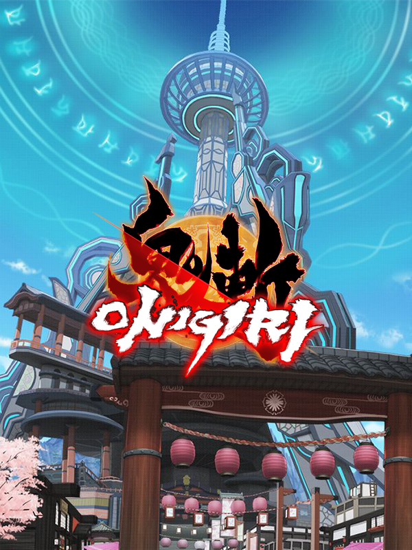

|  | |
| Spielzeit | Nicht gespielt |
| Letzte Aktivität | Nie |
| Hinzugefügt | 01.09.2022 0:07:45 |
| Modifiziert | 12.12.2022 1:09:34 |
| Fertigstellungsstatus | Not Played |
| Bibliothek | Nintendo |
| Quelle | Nintendo |
| Plattform | Nintendo Switch |
| Veröffentlichungsdatum | 06.02.2013 |
| Community Bewertungen | 80 |
| Kritiker Punkte | 60 |
| Benutzerwertung | |
| Genre | Adventure 🐎 RPG |
| Entwickler | CyberStep, Inc. |
| Verleger | CyberStep |
| Eigenschaft | Co-op Multiplayer |
| Links | Steam Wikipedia Wikia Official Website |
| Tag | 3D Action Action Roguelike Action RPG Adventure Anime Character Customization Colorful Comic Book Exploration Free to Play Great Soundtrack JRPG Massively Multiplayer MMORPG Multiplayer Online Co-Op RPG Spectacle fighter Third Person |